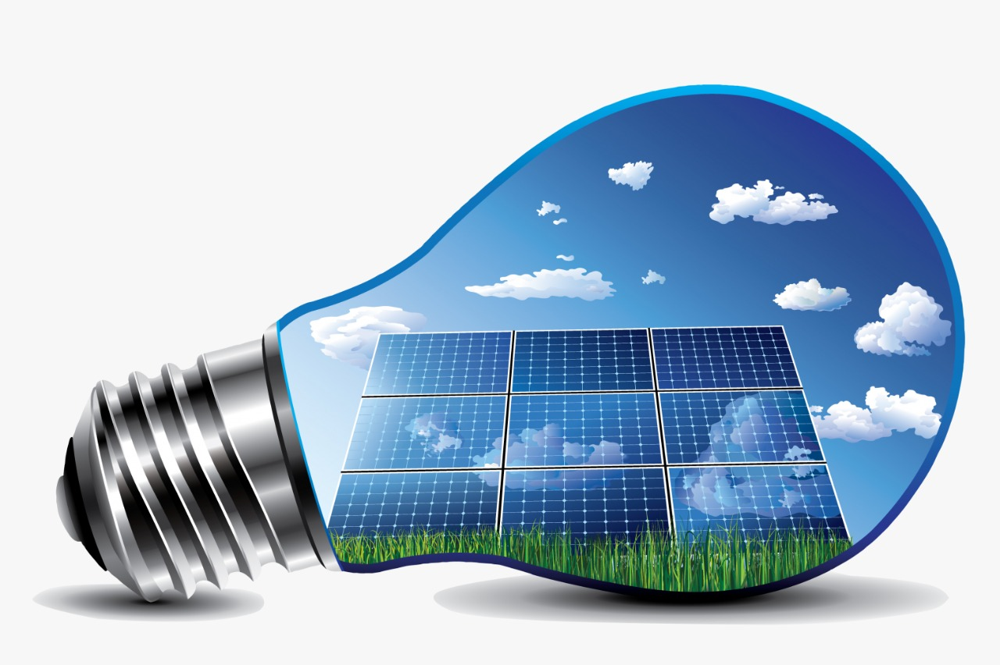

Energia Solar

A energia solar é uma energia renovável obtida pela luz do sol, utilizada para o aquecimento de água (energia térmica) ou como fonte de energia elétrica.
Assim como a energia eólica é uma das formas limpas de produção de energia que mais cresce no mundo.
Como Funciona a Energia Solar
A energia solar é proveniente da luz do sol e obtida através de placas solares, que têm como função captar a energia luminosa e transformá-la em energia térmica ou elétrica.
Além disso, esse tipo de energia pode ser obtida nas usinas solares compostas por inúmeros painéis que captam a energia do sol.
Tipos de Energia Solar
A energia solar pode ser usada para produzir energia térmica, através do método de aquecimento solar.
Ela também pode ser usada para produzir energia elétrica diretamente, através dos painéis solares fotovoltaicos ou ainda indiretamente, por meio das usinas que usam a energia heliotérmica.
Placas Solares Fotovoltaicas
Os painéis ou placas fotovoltaicas utilizam um método direto de produção de energia elétrica.
A luz solar é absorvida nas células solares, também chamadas fotovoltaicas ou fotoelétricas que são feitas de material semicondutor, geralmente de cristais de silício.
As partículas da luz solar (fótons) quando entram em contato com os átomos do silício, provocam o deslocamento dos elétrons, gerando assim, uma corrente elétrica, que é usada para carregar uma bateria.
Energia Heliotérmica
A energia heliotérmica, também chamada CSP (do inglês concentrating solar power) consiste em um método indireto de produção de energia elétrica, em que a luz solar é refletida por espelhos e concentrada em forma de calor (energia térmica) em um receptor.
Em seguida, essa energia é transformada em energia mecânica e, por fim, em energia elétrica, de forma semelhante ao que acontece em uma usina termoelétrica.
Além de produzir energia elétrica, a energia heliotérmica pode ser usada para usinas que requerem altas temperaturas para produzir energia elétrica, sem necessidade de usar combustíveis fósseis.
O excedente de energia proveniente do sol não aproveitada pela usina, pode ser armazenada em forma de calor em tanques, sendo usada, por exemplo, quando há baixa insolação ou à noite.
Vantagens e Desvantagens da Energia Solar
Alguns estudos apontam que até 2050 a energia solar se tornará a principal fonte de energia elétrica em todo mundo devido às vantagens que apresenta.
É uma energia renovável, limpa e barata, pois o sol é uma fonte gratuita, ao contrário dos combustíveis fósseis que são um recurso altamente poluente e limitado, tornando-os progressivamente mais caros;
Têm despertado o interesse de muitos pesquisadores, e quanto maior for o investimento em tecnologia mais barata ela se tornará;
As usinas solares que utilizam a energia heliotérmica ou concentrada (CSP) podem armazenar o excedente de energia que não foi aproveitada e usá-la quando preciso;
A possibilidade de instalação de painéis fotovoltaicos em regiões distantes ou isoladas;
A pouca exigência necessidade de manutenção.
As desvantagens da energia solar são:
Os custos elevados das placas e, por este motivo, ainda é pouco utilizada no mundo;
A necessidade de haver boa insolação, pois se houver vários dias sem sol não haverá energia;
A exigência de grande quantidade de matéria-prima para fabricação dos equipamentos, como o silício, demandando exploração dos recursos.
Energia Solar no Brasil e no Mundo
No Brasil a energia solar representa apenas 0,02% da produção, com estimativas de atingir 4% até 2024, segundo dados do Ministério de Minas e Energia.
Foi inaugurada a Usina Megawatt Solar em Florianópolis, Santa Catarina. São placas fotovoltaicas espalhadas pelo estacionamento da sede da Eletrosul, com capacidade de atender 540 residências.
Atualmente, apenas 1% da energia gerada no mundo provém das fontes de energias solares. Dentre os maiores produtores mundiais de energia solar estão: a Alemanha, a Itália, a Espanha, o Japão e os Estados Unidos.
Existem muitos parques solares (CSP) no mundo, vários deles na Espanha. Em 2014, foi inaugurada na Califórnia, EUA, a Ivanpah Solar Electric Generating System, a maior usina até o momento que é quase 4 vezes maior do que a Shams Power Company, em Abu Dhabi, nos Emirados Árabes Unidos, inaugurada em 2013.
Enquanto a usina árabe produz cerca de 100 Megawatts, a americana abriga 300 mil espelhos para coletar a luz do sol, podendo produzir cerca de 392 megawatts de energia, fornecendo energia para 140 mil casas.
Juntas, as usinas devem ajudar a reduzir quase 600 mil toneladas por ano de emissões de CO2.